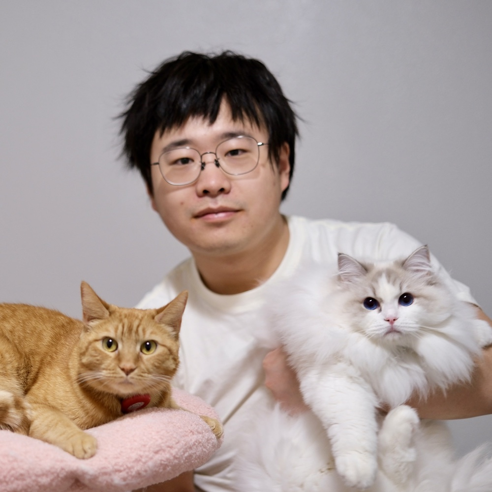

Research Engineer 曹胜操
Shengcao
Cao
I build visual intelligence that learns with less human supervision.
Google DeepMind · Ph.D., University of Illinois Urbana-Champaign

Figure 1. Left: Kaka “好运来”, a five-year-old orange tabby. Right: Dola “多乐”, a one-year-old ragdoll. Middle: their human, Shengcao♥About
Learning visual intelligence with less human supervision.
I am a Research Engineer at Google DeepMind and a Ph.D. candidate in Computer Science at the University of Illinois Urbana-Champaign, advised by Liangyan Gui and Yuxiong Wang, graduating in August 2026. Earlier, I received my M.S. in Robotics from Carnegie Mellon University, working with Kris Kitani, and my B.S. in Computer Science from Peking University, working with Liwei Wang.
My research builds visual intelligence that learns with less human supervision, spanning self-supervised learning, open-world detection and segmentation, and large multimodal models. I work toward autonomous models and agents that discover knowledge and structure on their own, and toward omni-modal representations that integrate vision, language, and other modalities into a shared understanding of the world.
Experience
-
May 2026 — Present
Research Engineer
Google DeepMind
-
May 2025 — Dec 2025
Student Researcher
Google DeepMind
-
May 2024 — Nov 2024
Applied Research Scientist Intern
Adobe Research
-
May 2023 — Aug 2023
Research Scientist Intern
Adobe Research
-
May 2022 — Aug 2022
Visiting Scholar
IBM Research — T. J. Watson Center
Education
-
Aug 2021 — Aug 2026
Ph.D., Computer Science
University of Illinois Urbana-Champaign
-
Aug 2019 — May 2021
M.S., Robotics
Carnegie Mellon University
-
Sep 2015 — Jul 2019
B.S., Computer Science
Peking University
Selected publications
-
Think in Latent, Explain in Language: Self-Explainable Latent Reasoning
ICML 2026
-
CoCo-IR: Contextual Composed Image Retrieval
ECCV 2026
-
Refer to Anything with Vision-Language Prompts
ICCV 2025
-
Emergent Visual Grounding in Large Multimodal Models Without Grounding Supervision
ICCV Findings 2025
-
Aligning Large Multimodal Models with Factually Augmented RLHF
ACL Findings 2024
-
SOHES: Self-Supervised Open-World Hierarchical Entity Segmentation
ICLR 2024
-
HASSOD: Hierarchical Adaptive Self-Supervised Object Detection
NeurIPS 2023
-
Learning Lightweight Object Detectors via Progressive Knowledge Distillation
ICML 2023
-
Contrastive Mean Teacher for Domain Adaptive Object Detectors
CVPR 2023
-
Rethinking Transformer-Based Set Prediction for Object Detection
ICCV 2021
* denotes equal contribution. • Full list on Google Scholar.